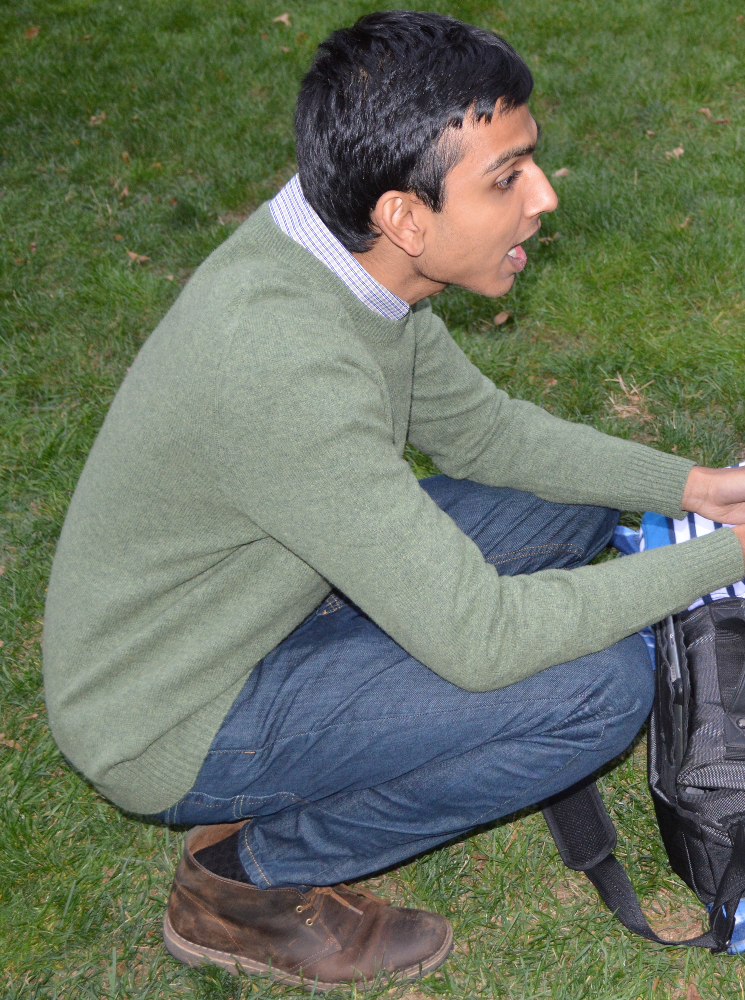

Sepehr Assadi
I am currently a third year PhD student in the
department of Computer & Information Sciences at University of Pennsylvania, affilated
with the Theory Research Group. I am very fortunate to have Sanjeev Khanna as my advisor.
Prior to my enrollment at Penn, I got my B.Sc. degree in Computer Engineering from department of Computer Engineering at
Sharif University of Technology, Iran.

Research Interests
My primary research interest is in algorithms for processing massive data sets and in particular streaming algorithms. I am also interested in the areas of approximation & online algorithms, communication complexity, and algorithmic game theory.
Papers
- The Stochastic Matching Problem With (Very) Few Queries EC 2016
- Tight Bounds for Single-Pass Streaming Complexity of the Set Cover Problem STOC 2016 (invited to SICOMP special issue for STOC'16 papers)
- Algorithms for Provisioning Queries and Analytics ICDT 2016
- Maximum Matchings in Dynamic Graph Streams and the Simultaneous Communication Model SODA 2016
- Dynamic Sketching for Graph Optimization Problems with Applications to Cut-Preserving Sketches FSTTCS 2015
- Fast Convergence in the Double Oral Auction WINE 2015 (invited to TEAC special issue for WINE'15 papers)
- Online Assignment of Heterogeneous Tasks in Crowdsourcing Markets HCOMP 2015
- On The Rectangle Escape Problem CCCG 2013
- The Minimum Vulnerability Problem ISAAC 2012 (full version in Algorithmica special issue for ISAAC'12 papers)
Teaching Experience
- • Teaching assistant, University of Pennsylvania
- Introduction to Algorithms (Spring 2015)
- Advanced Topics in Algorithms & Complexity: Randomized Algorithms (Fall 2014)
- • Teaching assistant, Sharif University of Technology
- Advanced Topics in Theory of Computability, Complexity and Logic (Spring 2013)
- Design and Analysis of Algorithms: (Spring 2013, Fall 2012, Spring 2012 and Spring 2011)
- Data Structures and Fundamentals of Algorithms: (Fall 2012, Fall 2011, Spring 2011 and Fall 2010)
- Theory of Machine Languages and Automata: (Spring 2013, Fall 2012 , Spring 2012, Fall 2011 and Spring 2011)
Talks
- • Tight-Bounds for Single-Pass Streaming Complexity of the Set Cover Problem
[Slides]
Symposium on Theory of Computing (STOC 16), June 21, 2016.
- • Tight Bounds for Linear Sketches of Approximate Matchings
[Slides]
Columbia Theory Seminar, Columbia University, January 29, 2016.
CIS Theory Seminar, University of Pennsylvania, January 15, 2016.
- • Maximum Matchings in Dynamic Graph Streams and the Simultaneous Communication Model
[Slides]
Symposium on Discrete Algorithms (SODA 16), January 12, 2016.
- • Dynamic Sketching for Graph Optimization Problems with Applications to Cut-Preserving Sketches
[Poster]
Sublinear Algorithms Workshop, Johns Hopkins University, January 8, 2016.
- • Algorithms for Provisioning Queries and Analytics
[Slides]
Data Provenance Reading Group, University of Pennsylvania, Novemeber 20, 2015.
-
- • Sketching as a Tool for Numerical Linear Algebra
[Part 1] [Part 2][Graph Sparsification]
Big Data Reading Group, University of Pennsylvania, February - March 2015.
- • The Rectangle Escape Problem
[Slides]
Sharif University of Technology, May 2013.
(joint work with Ehsan Emamjomeh-Zadeh)
- • Tight-Bounds for Single-Pass Streaming Complexity of the Set Cover Problem [Slides]
Symposium on Theory of Computing (STOC 16), June 21, 2016. - • Tight Bounds for Linear Sketches of Approximate Matchings [Slides]
Columbia Theory Seminar, Columbia University, January 29, 2016.
CIS Theory Seminar, University of Pennsylvania, January 15, 2016. - • Maximum Matchings in Dynamic Graph Streams and the Simultaneous Communication Model [Slides]
Symposium on Discrete Algorithms (SODA 16), January 12, 2016. - • Dynamic Sketching for Graph Optimization Problems with Applications to Cut-Preserving Sketches [Poster]
Sublinear Algorithms Workshop, Johns Hopkins University, January 8, 2016. - • Algorithms for Provisioning Queries and Analytics [Slides]
Data Provenance Reading Group, University of Pennsylvania, Novemeber 20, 2015. - • Sketching as a Tool for Numerical Linear Algebra [Part 1] [Part 2][Graph Sparsification]
Big Data Reading Group, University of Pennsylvania, February - March 2015. - • The Rectangle Escape Problem [Slides]
Sharif University of Technology, May 2013. (joint work with Ehsan Emamjomeh-Zadeh)